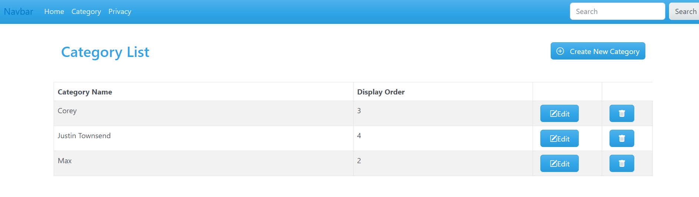

Bulky book is a web application that allows you to Create, Read, Update, and Delete categories into a database. and alerts you when you have succesfully completed any of these operations while also giving you error notifications if something is not right.
